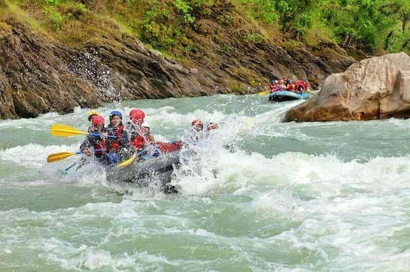
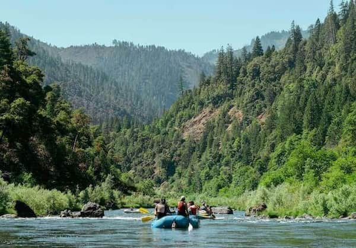
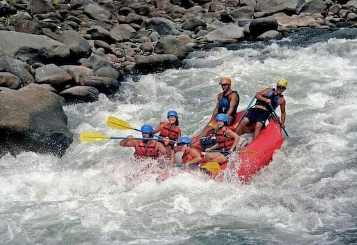
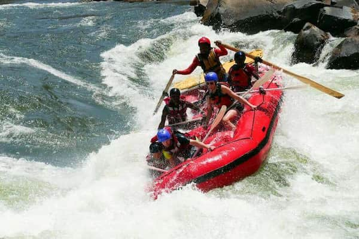
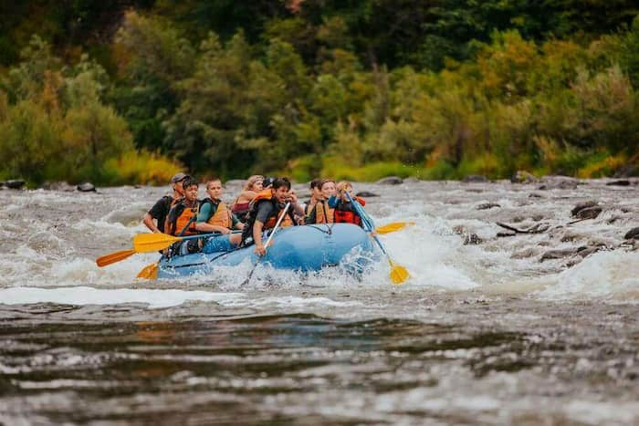

Rafting Aventura Extrema
Nossa missão é proporcionar experiências inesquecíveis e seguras nas corredeiras mais emocionantes do país, conectando você com a natureza pura e a adrenalina do rafting profissional.

História
Fundada em 2010 por entusiastas de esportes radicais, a Rafting Aventura Extrema começou como uma pequena equipe de guias apaixonados pelas corredeiras locais. Com o passar dos anos, expandimos nossas operações e nos tornamos referência em segurança e entretenimento ecológico.

Hoje contamos com uma frota moderna de botes, equipamentos de proteção certificados internacionalmente e uma equipe de instrutores altamente treinados, prontos para guiar desde iniciantes até praticantes avançados.
A aventura está te esperando!




